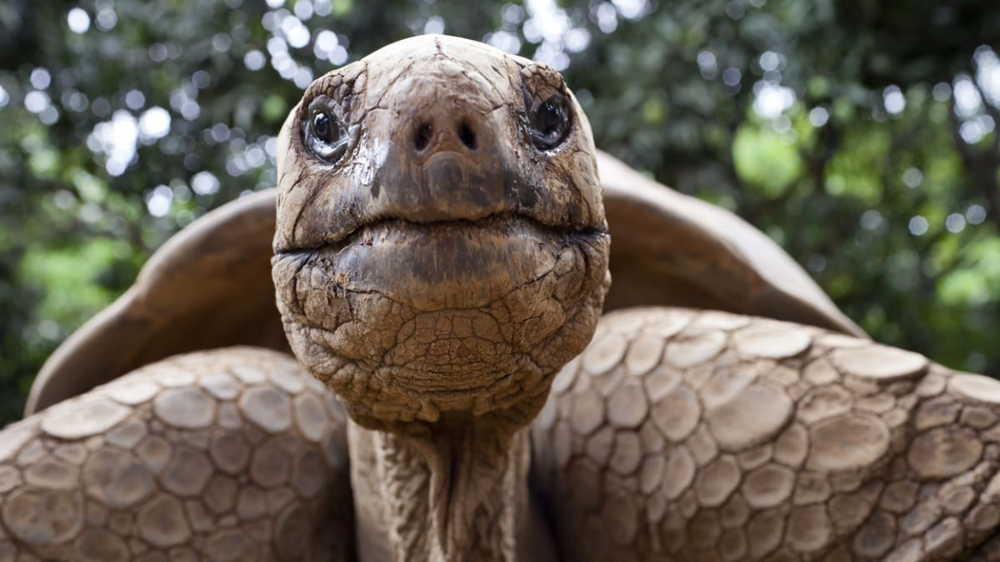

Chování želv a potřebné vybavení

Chování želv:
Zelvy jsou fascinující tvorové, kteří vyžadují zvláštní péči a prostředí pro šťastný a zdravý život.
Je důležité pochopit jejich přirozené chování a potřeby, abyste mohli poskytnout optimální péči.
Teplotní regulace: Želvy jsou chladnokrevní tvorové, což znamená, že potřebují teplotu prostředí k regulaci své tělesné teploty.
Je důležité poskytnout jim teplotní gradient v teráriu, aby si mohly vybrat místo s vhodnou teplotou pro ohřev a ochlazení.
Prosředí a úkryty: Želvy potřebují dostatek prostoru k pohybu a různé druhy úkrytů pro pohodlí a bezpečí.
Nabídněte jim substrát, který jim umožní kopat si a hnízdit, a poskytněte jim duté kameny, dřevěné kůry nebo jiné předměty jako úkryty.
Voda: Želvy potřebují přístup k čisté vodě pro pití a koupání. Poskytněte jim dostatečně velkou nádobu s vodou, ve které se mohou ponořit a vyčistit si kůži.
Výživa: Želvy jsou všežravci a mají různorodou stravu, která zahrnuje listy, zeleninu(čekanka, polníček, ledový salát, mlíčáky), ovoce, hmyz a drobné obratlovce.
Zajistěte jim vyváženou stravu a doplňte jim vhodné vitamíny a minerály.
Oslovení: I když jsou zelvy často vnímány jako pomalí tvorové, mají své vlastní jedinečné osobnosti.
Buďte trpěliví a respektujte jejich potřeby, ať už jde o klidnou dobu nebo aktivní vyběhání.
Potřebné vybavení pro chov želv:

Terárium: Poskytněte dostatečně velké terárium s vhodným substrátem a úkryty pro želvy.
Vodní nádoba: Nabídněte jim dostatečně velkou nádobu s vodou pro pití a koupání.
Vytápění a osvětlení: Zajistěte teplotní zdroje a osvětlení, které imitují přirozené podmínky prostředí, ve kterém želvy žijí.
Strava: Mějte k dispozici různorodou stravu pro želvy, včetně listů, zeleniny, ovoce, hmyzu.
Vitamíny a minerály: Dopňte stravu želv vhodnými vitamíny a minerály, aby si udržely zdraví a vitality.
Regulace vlhkosti: Zajistěte optimální úroveň vlhkosti v teráriu, aby se želvy cítily pohodlně.
Chov zelv vyžaduje pečlivou péči a pozornost k detailům, ale s vhodným vybavením a znalostmi o jejich potřebách mohou být želvy fascinujícími společníky a skvělými domácími mazlíčky.